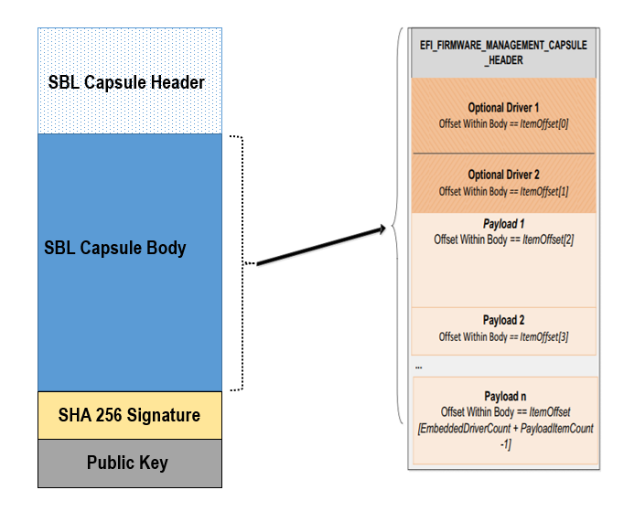

Firmware Update
SBL implements a secure and fail-safe firmware update mechanism.
The firmware update code is implemented as an SBL payload.
SBL launches the firmware update payload when it detects a firmware update signal.
The firmware update code authenticates a capsule before writing to the relevant region.
The firmware update code maintains a state machine in non-volatile storage to keep track of update progress. This allows the update to continue where it left off in case of interruption.
The SBL image contains redundant boot components and depends on hardware assisted switch to toggle between them. This allows a working update mechanism to be maintained in case of failure.
SBL supports the update of the following items, either by themselves or together:
BIOS region
CSME region
Config data component (of BIOS region)
uCode component (of BIOS region)
ACM component (of BIOS region)
Full container (in BIOS region)
Component within a container (in BIOS region)
The following flow occurs during a firmware update:
Step 1: The firmware update capsule is copied to the location specified in SBL configuration options.
Step 2: The firmware update is triggered from SBL shell or from operating system and is followed by system reset.
Step 3: SBL detects firmware update signal and sets platform into firmware update mode.
Step 4: After all hardware initializations are complete, SBL sees that it is in firmware update mode and loads firmware update payload to start update flow.
Step 5: The firmware update payload gathers capsule image from selected media and verifies it.
Step 6: The firmware update payload initializes state machine and identifies the update images in the capsule.
Step 7: The firmware update payload loops through and updates each firmware identified in the capsule image. Specifically:
It records update status after each firmware update.
It resets the system after the firmware update if a region/component requires it.
If updating any redundant regions/components (e.g. BIOS, uCode, etc.), it:
Updates the regions/components on backup partition
Sets backup parition as ‘active’
Reboots
Boots from backup partition
Updates the regions/components on primary partition
Sets primary partition as ‘active’
Reboots
If only updating non-redundant regions/components in BIOS region (e.g. CSME, IPFW, etc.), it:
Updates the regions/components
Reboots
In case of a power failure, it will use its state machine to continue from where it left off.
Step 8: The firmware update payload marks the end of the update and returns SBL back to normal execution. Specifically:
It sets state machine to done state, which indicates firmware update is completed.
It terminates firmware update.
It resets system to boot to operating system.
Generating capsule
After gathering required firmware binaries, capsule image can be generated using capsule generation tool. Please refer to Generating Component Binaries for Capsule for details about generating component binaries for capsule.
The capsule tool (
GenCapsuleFirmware.py) creates a capsule image that can be processed by SBL in firmware update flow.The capsule tool is capable of incorporating multiple firmware images into single capsule binary.
Each firmware is identified and included in the capsule image using a string. These strings are constructed as follows:
For non-container components, simply use its 4 character string identifier <4 byte comp id>.
For container components, use its 4 character container identifier along with its 4 character component identifier <4 byte id for component inside container : 4 byte id container id>.
These firmware identifier strings should be followed by the assoicated binary path.
Command Syntax:
usage: GenCapsuleFirmware.py [-h] -p <4 byte comp id> < FW IMAGE BINARY > -p <4 byte container component string id:4 byte comp id> <FW IMAGE BINARY> -p <4 byte comp id> <FW IMAGE BINARY n> -k PRIVKEY -o NEWIMAGE [-q] optional arguments: -h, --help show this help message and exit -p <4 byte string> <Payload Image>, Payload image that goes into firmware update capsule -k PRIVKEY, --priv_key PRIVKEY KEY_ID or RSA 2048/3072 private key path in PEM format to sign image. Use 'KEY_ID_FIRMWAREUPDATE_RSA2048/KEY_ID_FIRMWAREUPDATE_RSA3072' for KEY_ID -o NEWIMAGE, --output NEWIMAGE Output file for signed image -q, --quiet without output messages or temp filesThe following command generates a capsule image (
FwuImage.bin) containing an SBL image (sbl.bios.bin), CSME image (csme.bin), and CSME firmware update driver (csme_fw_update_driver.bin) signed by keyFirmwareUpdateTestKey_Priv_RSA2048.pem.:$ python ./BootloaderCorePkg/Tools/GenCapsuleFirmware.py -p BIOS sbl.bios.bin -p CSME csme.bin -p CSMD csme_fw_update_driver.bin -k $SBL_KEY_DIR/FirmwareUpdateTestKey_Priv_RSA2048.pem -o FwuImage.bin Successfully signed Bootloader image! $The following command generates a capsule image (
FwuImage.bin) containing a container component TSN MAC address inside container IPFW (tsnmacaddr.bin) signed by keyFirmwareUpdateTestKey_Priv_RSA2048.pem.:$ python ./BootloaderCorePkg/Tools/GenCapsuleFirmware.py -p TMAC:IPFW tsnmacaddr.bin -k $SBL_KEY_DIR/FirmwareUpdateTestKey_Priv_RSA2048.pem -o FwuImage.bin Successfully signed Bootloader image! $Note
The capsule tool will not allow building of a capsule image which contains overlapping firmware components (e.g. BIOS and TMAC:IPFW).
Note
The SBL_KEY_DIR is the path to SblKeys directory used on SBL.
Component ID String
This section explains how to determine 4 byte string identifier for each of updatable components used in SBL
If the updatable component is part of flash map, 4 byte string identifying the component should be the component id from flash map. During the runtime, firmware update payload will look for this 4 byte string in the flash map, if found, it will update the component.
As an example, the following is a sample flash map:
SG1B
0x4e5000(0xFFCE5000)
0x0db000
Uncompressed, R_B
KEYH
0x4e4000(0xFFCE4000)
0x001000
Uncompressed, R_B
CNFG
0x4e0000(0xFFCE0000)
0x004000
Uncompressed, R_B
FWUP
0x4c0000(0xFFCC0000)
0x020000
Compressed , R_B
SG02
0x440000(0xFFC40000)
0x080000
Compressed , R_B
UCOD
0x3c0000(0xFFBC0000)
0x080000
Uncompressed, R_B
If configuration data component to be updated, 4 byte string “CNFG” should be passed to capsule generation tool along with configuration data binary.
BIOS binary, CSME binary, and CSME update driver are assigned 4 byte pre-defined string identifier and can be found in the table below.
String ID
Firmware
BIOS
Slim Bootloader
CSME
CSME update binary
CSMD
CSME update driver
Generating Component Binaries for Capsule
Generating SBL binary for capsule
Please refer to Slimbootloader binary for capsule image section of desired board page in Supported Hardware to understand how to generate Slimbootloader binary for capsule.
Generating configuration data binary for capsule
Components inside the BIOS region are often padded to certain alignment and size.
Configuration Data region inside SBL is padded and so for generating capsule image to update configuration data region, please use CFGDATA.pad file available after building Slim Bootloader. After building Slim Bootloader, CFGDATA.pad file is available at Build/BootloaderCorePkg/DEBUG_VS2015x86/FV/CFGDATA.pad
Generating microcode binary for capsule
There are 2 ways to generate a microcode binary for capsule:
- Build SBL
SBL builds generate a microcode region that gets integrated into SBL. This can be used for microcode updates as well. It is located at Build/BootloaderCorePkg/DEBUG_VS2019/FV/UCODE.pad.
- Run uCode Utility
uCode Utility generates a microcode region based on the slot size and microcode patches specified (see uCode Utility). This is solely meant for microcode updates.
Generating Container Component binary for capsule
Slim Bootloader can update component regions inside container component in the BIOS region. GenContainer.py tool can help sign and create a component binary that can be used for updating a specific component region inside the container.
Following is a sample command to create signed component for capsule GenContainer.py sign -f <name of the component> -o <output file name> -c lz4 -a RSA2048_PSS_SHA2_256 -k $SBL_KEY_DIR/ContainerTestKey_Priv_RSA2048.pem -td BaseTools/Bin/Win32
The output file generated using above command can be used to create capsule.
Note
GenContainer.py tool is available at SblPlatform/BootloaderCorePkg/Tools folder.
Capsule Definition
SBL capsule starts with a SBL capsule header followed by SBL capsule data, SHA 256 signature and public key.
For ease of use SBL capsule data contains capsule defined by UEFI specification, which starts with EFI_FIRMWARE_MANAGEMENT_CAPSULE_HEADER followed by capsule body.
SBL capsule layout is shown in this picture
{kind=link}
SBL capsule header is defined below
typedef struct {
///
/// FileGuid is a GUID that identifies this image as a |SPN| capsule
///
EFI_GUID FileGuid;
///
/// The size, in bytes of this structure
///
UINT32 HeaderSize;
///
/// Version of Firmware contained in the capsule, this field is not used today.
///
UINT32 FirmwreVersion;
///
/// Attributes associated with the capsule, this field is not used today.
///
UINT32 CapsuleFlags;
///
/// Offset to the public key in the capsule image.
///
UINT32 PubKeyOffset;
///
/// Size of public key
///
UINT32 PubKeySize;
///
/// Offset to the capsule data in the capsule image.
///
UINT32 ImageOffset;
///
/// Size of capsule data
///
UINT32 ImageSize;
///
/// Offset to the SHA 256 signature inside the capsule image.
///
UINT32 SignatureOffset;
///
/// Size of signature data.
///
UINT32 SignatureSize;
///
/// Reserved for future use.
///
UINT32 Reserved[3];
} FIRMWARE_UPDATE_HEADER;
EFI_FIRMWARE_MANAGEMENT_CAPSULE_HEADER is defined in UEFI specification and is as follows
typedef struct {
UINT32 Version;
///
/// The number of drivers included in the capsule and the number of corresponding
/// offsets stored in ItemOffsetList array.
///
UINT16 EmbeddedDriverCount;
///
/// The number of payload items included in the capsule and the number of
/// corresponding offsets stored in the ItemOffsetList array.
///
UINT16 PayloadItemCount;
///
/// Variable length array of dimension [EmbeddedDriverCount + PayloadItemCount]
/// containing offsets of each of the drivers and payload items contained within the capsule
///
// UINT64 ItemOffsetList[];
} EFI_FIRMWARE_MANAGEMENT_CAPSULE_HEADER;
#define EFI_FIRMWARE_MANAGEMENT_CAPSULE_HEADER_INIT_VERSION 0x00000001
EFI_FIRMWARE_MANAGEMENT_CAPSULE_HEADER is followed by one or multiple update images each preceeded by EFI_FIRMWARE_MANAGEMENT_CAPSULE_IMAGE_HEADER header and is defined in UEFI specification as follows
typedef struct {
UINT32 Version;
///
/// Used to identify device firmware targeted by this update. This guid is matched by
/// system firmware against ImageTypeId field within a EFI_FIRMWARE_IMAGE_DESCRIPTOR
///
EFI_GUID UpdateImageTypeId;
///
/// Passed as ImageIndex in call to EFI_FIRMWARE_MANAGEMENT_PROTOCOL.SetImage ()
///
UINT8 UpdateImageIndex;
UINT8 reserved_bytes[3];
///
/// Size of the binary update image which immediately follows this structure
///
UINT32 UpdateImageSize;
///
/// Size of the VendorCode bytes which optionally immediately follow binary update image in the capsule
///
UINT32 UpdateVendorCodeSize;
///
/// The HardwareInstance to target with this update. If value is zero it means match all
/// HardwareInstances. This field allows update software to target only a single device in
/// cases where there are more than one device with the same ImageTypeId GUID.
/// This header is outside the signed data of the Authentication Info structure and
/// therefore can be modified without changing the Auth data.
///
UINT64 UpdateHardwareInstance;
} EFI_FIRMWARE_MANAGEMENT_CAPSULE_IMAGE_HEADER;
#define EFI_FIRMWARE_MANAGEMENT_CAPSULE_IMAGE_HEADER_INIT_VERSION 0x00000002
Note
Please refer to UEFI specification for more details about capsule header and data.
Triggering Firmware Update
SBL supports triggering firmware update from Linux, Windows, and SBL shell.
SBL provides a platform independent abstracted way of triggering firmware update from operating system. SBL provides two ACPI methods, DWMI.WQ00 for read and DWMI.WS00 for write to a platform specific chipset register that can survive a reset to signal firmware update. Please refer to Triggering Firmware Update section of desired board page in Supported Hardware to find Sample implementation.
Trigger Update From Linux Operating System
If your Linux kernel includes the Kconfig option INTEL_WMI_SBL_FW_UPDATE you can trigger a firmware update with the command below followed by restarting the system
echo 1 > /sys/bus/wmi/devices/44FADEB1-B204-40F2-8581-394BBDC1B651/firmware_update_request
reboot
Trigger Update From Windows Operating System
Users can use windows provided WMI service to call DWMI.WQ00 and DWMI.WS00 ACPI methods to trigger firmware update. Following the reset, Slim Bootloader boots into firmware update mode
A sample implementation of a VB script to call these methods from Windows operating system is provided below
set Service = GetObject("winmgmts:root/wmi")
set EnumSet = Service.InstancesOf ("AcpiFirmwareCommunication")
for each Instance in EnumSet
Wscript.Echo "Current Val: " & Hex(instance.Command)
instance.Command = 1
instance.Put_()
Wscript.Echo "Set New Val: " & Hex(instance.Command)
next 'instance
Trigger Update From Shell
During development, one can use shell command to manually test firmware update without relying on support in OS.
Copy
FwuImage.bininto the /boot/efi/ directory of the device identified by CAPSULE_INFO_CFG_DATA (default is first USB flash drive)Boot and press any key to enter SBL shell
Type command
fwupdatefrom shellObserve SBL resets the platform and performs update flow. It resets multiple times to complete the update process.
A sample boot messages from console:
Shell> fwupdate HECI SecMode 0 ... ============= Intel Slim Bootloader STAGE1A ============= ... ============= Intel Slim Bootloader STAGE1B ============= ... BOOT: BP0 MODE: 0 BoardID: 0E PlatformName: UP2 BootPolicy : 0x00000010 ... ============= Intel Slim Bootloader STAGE2 ============= ... Jump to payload ... Starting Firmware Update ... =================Read Capsule Image============== ... CapsuleImage: 0x787AF000, CapsuleSize: 0xEFE248 HASH Verification Success! Component Type (5) RSA Verification Success! The new BOOTLOADER image passed verification ... HECI/CSE ready for update Updating 0x77F000, Size:0x10000 ................ Finished 0% Updating 0x78F000, Size:0x10000 ................ Finished 1% ... Updating 0xEDF000, Size:0x10000 ................ Finished 99% Updating 0xEEF000, Size:0xE000 .............. Finished 99% .Reset required to proceed with the firmware update. ============= Intel Slim Bootloader STAGE1A ============= ... ============= Intel Slim Bootloader STAGE1B ============= ... BOOT: BP1 MODE: 0 BoardID: 0E PlatformName: UP2 BootPolicy : 0x00000010 ... ============= Intel Slim Bootloader STAGE2 ============= ... =================Read Capsule Image============== ... CapsuleImage: 0x787AE000, CapsuleSize: 0xEFE248 HASH Verification Success! Component Type (5) RSA Verification Success! The new BOOTLOADER image passed verification ... HECI/CSE prepare for update failed Updating 0x0, Size:0x10000 x............... Finished 0% Updating 0x10000, Size:0x10000 ................ Finished 1% Updating 0x20000, Size:0x10000 ................ Finished 99% Updating 0x770000, Size:0xF000 ............... Finished 99% .Reset required to proceed with the firmware update. ============= Intel Slim Bootloader STAGE1A ============= ... ============= Intel Slim Bootloader STAGE1B ============= ... BOOT: BP0 MODE: 0 BoardID: 0E PlatformName: UP2 ... ============= Intel Slim Bootloader STAGE2 ============= ... Firmware update Done! clear CSE flag to normal boot mode. ... ============= Intel Slim Bootloader STAGE1A ============= ... ============= Intel Slim Bootloader STAGE1B ============= ... BOOT: BP0 MODE: 0 BoardID: 0E PlatformName: UP2 ... ============= Intel Slim Bootloader STAGE2 ============= ... ==================== OS Loader ==================== Starting Kernel ...
Capsule Location
The location of the firmware update capsule image is passed to Firmware update payload through CAPSULE_INFO_CFG_DATA configuration data.
As an example, please refer to CAPSULE_INFO_CFG_DATA configuration data from Platform\ApollolakeBoardPkg\CfgData\CfgData_CapsuleInformation.yaml.
Note
Capsule update defined by UEFI specification is different from SBL capsule format.
Firmware Update Status
SBL reports firmware update status through custom defined Firmware Update status (FWST) ACPI table. FWST ACPI table will be available as part of RSDT and can be identified with a table signature “FWST”.
FWST ACPI table makes use of EFI_SYSTEM_RESOURCE_TABLE defined in UEFI specification to report firmware update status.
Note
Please refer to UEFI specification for structure definition of EFI_SYSTEM_RESOURCE_TABLE and EFI_SYSTEM_RESOURCE_ENTRY.
FWST ACPI table will contain EFI_SYSTEM_RESOURCE_ENTRY entry for each of the component updated through capsule update, update status is part of EFI_SYSTEM_RESOURCE_ENTRY entry.